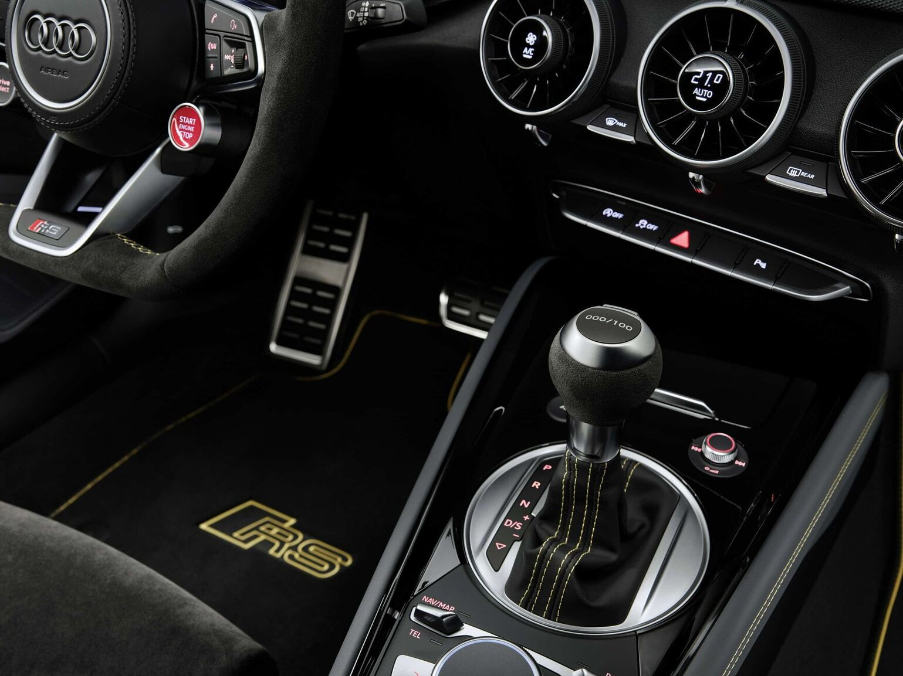

Audi TT RS Coupe exclusive series
Exclusive and powerful: the market premiere of the Audi TT RS Coupé iconic edition 2, limited to 100 units in Europe, will mark the quarter-century of success of the Audi TT Coupé. With its clean lines, this sports car has inspired the world since its premiere in 1998 thanks to its pure driving pleasure and clean design language. The RS version impresses with its special five-cylinder power and a sound that gets under your skin. The limited series Audi TT RS Coupé iconic edition2 combines these emotional characteristics and emphasizes them with sporty design elements both in the exterior and interior.
Timeless: The TT has been an Audi design icon for almost a quarter of a century. Now the Audi TT RS Coupé iconic edition2 continues this trend into the future - a fast sports car with innovations, while retaining the typical TT RS qualities: design and dynamics.
"The name Audi TT RS Coupé iconic edition 2 says it all," says Sebastian Grams, Managing Director of Audi Sport GmbH. "The model recalls the iconic design language of the TT, which is at the same time a symbol of boldness and elegance in an uncompromising form. Thanks to exclusive exterior and interior accents, the presentation of Audi's ultimate sports coupe, and its multiple award-winning five-cylinder engine, is not only tangible, but also visible to the fans."
Inspired by Bauhaus: TT Coupé
With a vision of an "enthusiast's car", Audi presented the Audi TT Coupé as a sports car studio at the IAA in Frankfurt in the fall of 1995. Almost symmetrical, the Audi TT consistently follows a design principle based on geometric, round shapes. The design did not compromise, but rather set priorities - and this immediately impressed the audience.
Three years later, the coupe went into production almost unchanged. One year after the TT Coupé, Audi launched the TT Roadster. In its second model generation, the coupe was enriched with S and RS variants.
"The TT is inspired by the Bauhaus and its universal design philosophy of 'less is more,'" says head of Audi Design Mark Lichte. "The maximum reduction - the omission of everything unnecessary and insignificant - was so radical and daring that the TT in its simplicity quickly achieved the most desirable goal of good design: to be timeless. Once you achieve this, you are out of trend and yet you are current - simply for good style is timeless."
That's why - three generations of the TT and a quarter of a century later - the typical lines of the 1998 coupé can still be found in the current iconic edition of the TT RS Coupé2. The limited series stays true to the minimalist design that runs through the clean exterior to the interior, which to this day is clearly and simply focused on the driver.
The typical pipe and cylinder shapes that blend into the interior of the instrument design can also be found in the current Audi TT RS Coupé iconic edition2 - such as the standard fuel tank cap, the round air vents, the edges of the shift paddles the gears and the striking gear lever. The enthusiasm expressed back in 1995 continues to inspire the TT Coupé to this day.
X out of 100: extremely exclusive highlights in interior design
The interior of the TT RS Coupé iconic edition2 is characterized by exclusivity and attention to detail. Here too, the dark color scheme of the exterior remains a central motif, which is further accentuated by the targeted use of accents from exclusive Audi components. The RS sports seats are two-tone with fine gray Nappa side panels and black Alcantara center panels, as well as yellow honeycomb stitching. Exclusive "iconic edition" embroidery is embroidered into the black Alcantara at shoulder height.
The black floor mats are finished with RS embroidery in a shade of yellow, while the door armrest and center console are also gray and decorated with contrasting stitching in yellow - just like the black lid of the Audi virtual cockpit. Customers touch the black Alcantara on the door panels and the RS sports leather steering wheel with markings in yellow at 12 o'clock. The exceptional individuality is also visible on the gear lever: the numbered emblem makes each of the 100 cars in this special edition unique. Ambient lighting creates an atmosphere in the interior, and the Bang & Olufsen premium sound system with 3D sound enables a rich sound experience.
The strength of the line is in its functionality: The legendary five-cylinder engine provides an incomparable sound
The TT RS Coupé iconic edition2 relies on Audi Sport's proven 2.5 TFSI engine with an output of 294 kW (400 hp) and a maximum torque of 480 Nm. Numerous motorsport successes make it one of Audi's most attractive powertrains. Countless motorsport victories and strong everyday performance have earned the five-cylinder engine the International Engine of the Year award nine times in a row since 2010.
As is typical of the TT RS, its power goes through a seven-speed S tronic to permanent four-wheel drive quattro. The electro-hydraulic multi-plate clutch, which debuted in 1998 as part of the Audi TT, freely distributes power to all wheels between the front and rear axles. The Audi drive select driving dynamics system allows the driver to control the quattro drive and other components such as the steering, the seven-speed S tronic gearbox, the exhaust flaps and the engine characteristics.
The Audi TT RS Coupé iconic edition2 reaches a top speed of 280 km/h (173.9 mph). This compact sports car sprints from standstill to 100 km/h (62 mph) in just 3.7 seconds. The engine provides an extremely emotional driving experience with its typical 1-2-4-5-3 cylinder firing sequence and accompanying throaty sound. Due to the specific firing order, distant cylinders are activated sequentially, which creates a very specific rhythm and character. The odd number of cylinders creates harmonic frequencies that accompany the intonation, and the engine control unit also contributes to the unique sound. Under heavier load, the flaps in the exhaust duct open for an even fuller sound.
In addition to the usual low weight (1475 kg TT RS Coupé), the RS sports suspension plus the adaptive dampers in Audi magnetic ride technology ensure excellent handling and stability. Control also goes through the Audi drive select driving dynamics system.
The Edition model will be available from the first quarter of 2023.
The limited series of the model starts with orders from the beginning of October 2022. In Germany, the Audi TT RS Coupé iconic edition2 is available for €113,050, with deliveries starting in the first quarter of 2023.
Limited to 100 units, the special model is an extremely exclusive offer for TT and RS fans. Thanks to Audi's exclusive program, customers can configure the sports model to their own taste even outside of the limited series - from the individual exterior colors to the leather color and the choice of contrasting stitching.
＜ Back